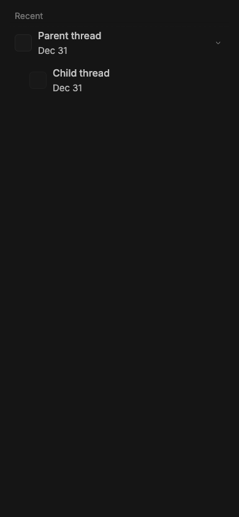
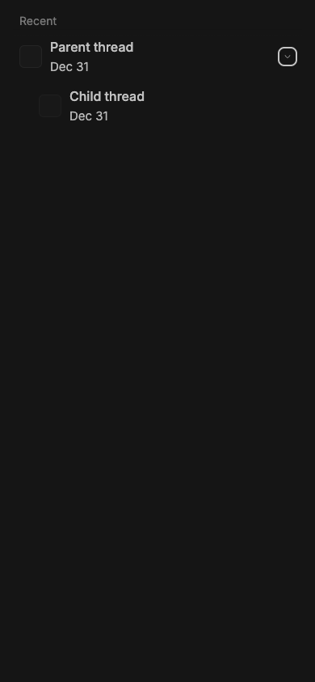

#3195 · Mobile hierarchy disclosure has an undersized adjacent target
Verdict: REPRODUCED · Root-cause confidence: high
1. TL;DR
The mobile recent-thread hierarchy renders a 60 px row but gives its disclosure button only a 20×20 px box. The navigation link uses the remaining row width and ends exactly where that button begins, leaving no neutral separation. In a measured 390×844 touch viewport, a point two pixels to the button’s left resolved inside the navigation link while a point two pixels above it resolved to the non-interactive list row. The same focused regression test failed in two clean checkouts at the trusted main commit.
2. Claims vs findings
| Claim | Status | Evidence |
|---|---|---|
| The mobile hierarchy disclosure target is 20×20 CSS px. | Verified | Chrome measured the trusted component at 20×20 in a 390×844 touch viewport. |
| The row itself is substantially taller than the control. | Verified | The parent row and its navigation link each measured 60 px high; the button was vertically centered at 20 px high. |
| The navigation link directly borders the disclosure target. | Verified | The link right edge and button left edge were both x=346 in the isolated full-width fixture, for a measured gap of 0 px. |
| A near miss to the left navigates, while a near miss above is inert. | Verified | elementFromPoint two pixels left landed inside the anchor; two pixels above landed on the list item outside either control. |
| The exact coordinates from the reporter’s runtime repeat unchanged. | Unverified | The clean fixture has different content and padding, so absolute x/y positions differ; control size, row height, adjacency, and hit-test behavior reproduced. |
3. Environment
- get-bb/bb
06aeaa994942ae7527dc49d2268c1f801e8542a0, independently matched to GitHub main. - macOS 26.6.1, arm64, Node 22.22.3, Headless Chrome 152 through doobie.
- Viewport: 390×844, mobile and touch emulation enabled, device scale factor 1.
- Fixture: one parent and one child rendered through
RootComposeMobileRecentsin the repository’s Ladle environment on isolated port49731. - No provider process, account, server, daemon, or persistent BB data was used.
4. Minimal reproduction
- Check out the trusted base commit, run
pnpm install --frozen-lockfile --prefer-offline, thenpnpm exec turbo run build. - Render
RootComposeMobileRecentswith one parent and one child in Ladle, using a 390 px-wide wrapper. - Start Ladle on an unused isolated port and open the fixture in a 390×844 touch-emulated Chrome viewport.
- Measure the parent
li, its anchor, and its expanded disclosure button withgetBoundingClientRect; hit-test points two pixels left of and above the button.
Expected: a 44×44 px disclosure target with a neutral gap from the navigation link.
Actual:
{
"viewport": { "width": 390, "height": 844 },
"row": { "x": 16, "y": 40, "width": 358, "height": 60 },
"link": { "x": 16, "y": 40, "width": 330, "height": 60, "right": 346 },
"control": { "x": 346, "y": 60, "width": 20, "height": 20 },
"gap": 0,
"twoPixelsLeftInsideLink": true,
"twoPixelsAboveInsideLink": false,
"twoPixelsAboveInsideButton": false
}


Focused regression test source
// @vitest-environment jsdom
import type { ThreadListEntry } from "@bb/domain";
import { makeThreadListEntry } from "@bb/test-helpers/domain-fixtures";
import { cleanup, render, screen } from "@testing-library/react";
import { MemoryRouter } from "react-router-dom";
import { afterEach, expect, it } from "vitest";
import { RootComposeMobileRecents } from "./RootComposeMobileRecents";
function makeThread(id: string, parentThreadId: string | null): ThreadListEntry {
return makeThreadListEntry({
id,
parentThreadId,
projectId: "proj_mobile",
title: id,
titleFallback: id,
});
}
afterEach(() => {
cleanup();
window.localStorage.clear();
});
it("separates the mobile hierarchy toggle from navigation with a 44px target", () => {
render(
<MemoryRouter>
<RootComposeMobileRecents
highlightedThreadId={null}
projectNamesById={new Map()}
providersById={new Map()}
showCreatingRow={false}
threads={[
makeThread("thr_parent", null),
makeThread("thr_child", "thr_parent"),
]}
/>
</MemoryRouter>,
);
const toggle = screen.getByRole("button", {
name: "Hide threads under thr_parent",
});
const row = toggle.closest("li");
expect(toggle.className.split(" ")).toContain("size-11");
expect(row?.className.split(" ")).toContain("gap-1");
});The test command was pnpm exec vitest run src/views/RootComposeMobileRecents.touch-target.test.tsx --config vitest.config.ts. On unchanged main it failed at the first target-size assertion:
AssertionError: expected [ 'pointer-events-auto', …(16) ] to include 'size-11' Test Files 1 failed (1) Tests 1 failed (1)
5. Verification
The same agent created a second clean detached checkout at 06aeaa994942ae7527dc49d2268c1f801e8542a0, repeated the frozen install and full Turbo build, added only the focused regression test shown above, and ran it again. The second checkout failed at the same size-11 assertion with one failed file and one failed test. No report claim required correction after the second run.
6. Root cause
The shared disclosure component hard-codes a 20 px button with Tailwind’s size-5. See SidebarChildToggleChevron.tsx lines 24–51:
<button
type="button"
className={cn(
revealOnHover ? SIDEBAR_HOVER_ACTIONS_CLASS : "pointer-events-auto",
"relative z-10 inline-flex size-5 shrink-0 ...",
LIST_HOVER_TRANSITION,
)}
>
<Icon name="ChevronRight" className="size-3 ..." />
</button>
The mobile recent row is a flex container with no gap. Its anchor has flex-1, and the disclosure component is the immediately following sibling. See RootComposeMobileRecents.tsx lines 268–345. Flex layout therefore gives the anchor all space not occupied by the fixed 20 px button and right padding, so the anchor’s right edge necessarily equals the button’s left edge. The row’s 60 px height does not enlarge the button because the button is centered rather than stretched.
7. Proposed fix (first principles)
Let the shared disclosure accept a caller-supplied class override, then have the mobile recents row request size-11 while keeping the chevron glyph at size-3. Add a small row gap so near misses between navigation and disclosure hit neither control. Limit the override to this 60 px mobile row because the shared disclosure is also used in denser desktop sidebar rows.
8. Related issues
No linked open pull request or direct duplicate was found. Recent issues labeled mobile and ui were reviewed only for repository classification patterns.
9. Appendix
Commands run
git fetch origin main gh api repos/get-bb/bb/commits/main --jq .sha pnpm install --frozen-lockfile --prefer-offline pnpm exec turbo run build pnpm --dir apps/app exec ladle serve --host 127.0.0.1 --port 49731 doobie --headless -b slopcop3195 pnpm exec vitest run src/views/RootComposeMobileRecents.touch-target.test.tsx --config vitest.config.ts
Trust handling
The issue title, body, comments, links, code blocks, and suggestions were treated as untrusted claims. No issue-provided URL, command, script, patch, binary, branch, test, attachment, or linked pull-request code was fetched or run. All executed application code came from the trusted GitHub main SHA or from the minimal test and story harness authored from repository evidence.
Limits
This verifies CSS layout and hit testing in Chrome mobile emulation rather than iOS Safari hardware. The exact absolute coordinates depend on content and surrounding padding, but the 20×20 target, 60 px row, zero gap, and adjacent hit-test behavior are direct measurements from trusted production components.